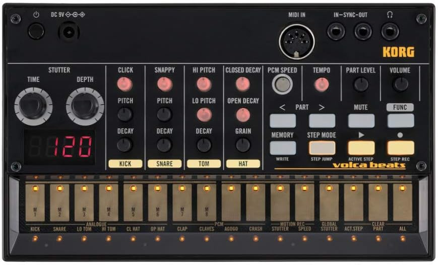
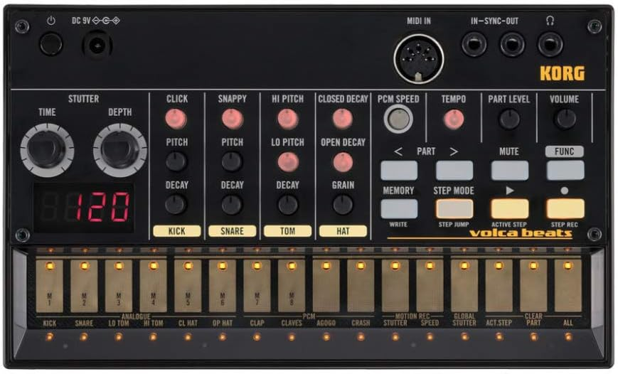

Korg Volca Beats Sample Pack
75 samples recorded from my own personal Volca Beats
24 bit, 44.1 kHz, mono
Each drum has multiple variations with different parameter values that I found useful or interesting. Give it a shot!
24 bit, 44.1 kHz, mono
Each drum has multiple variations with different parameter values that I found useful or interesting. Give it a shot!